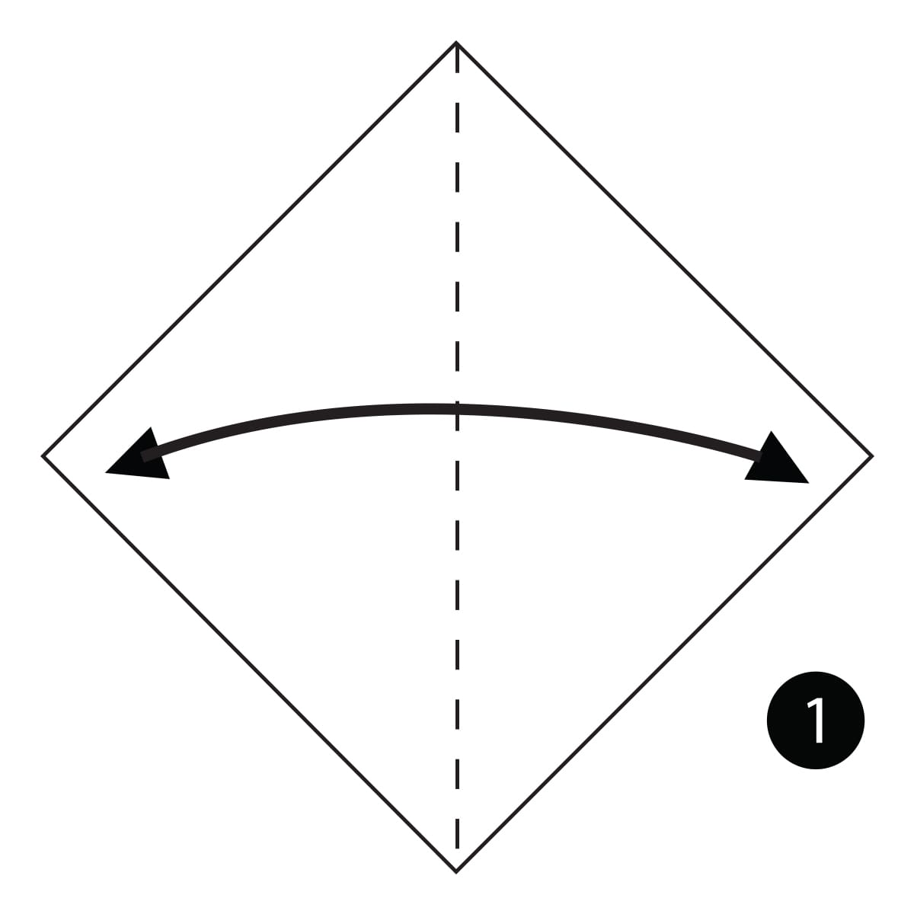
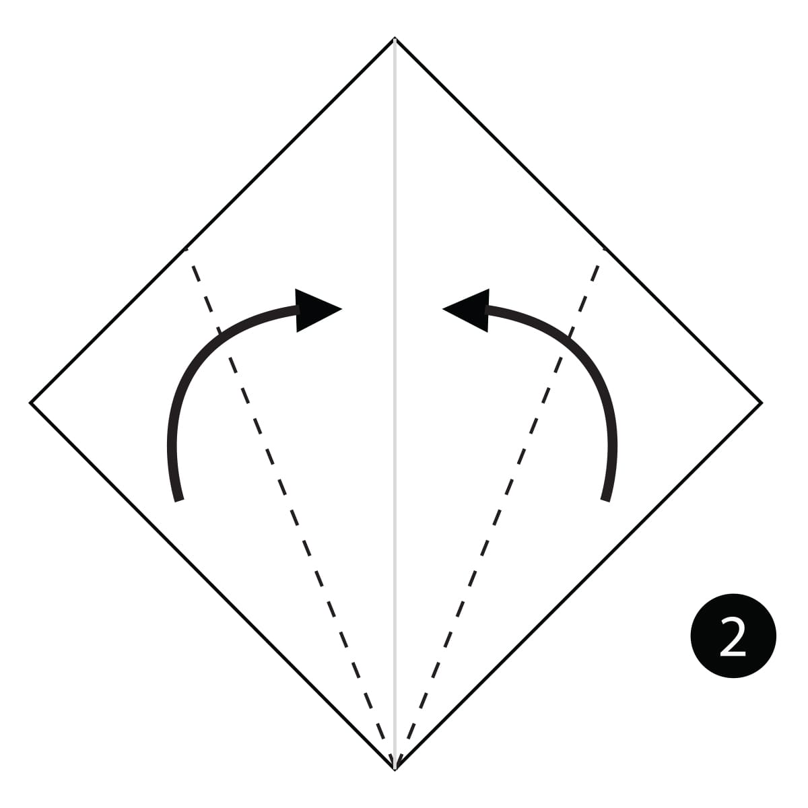
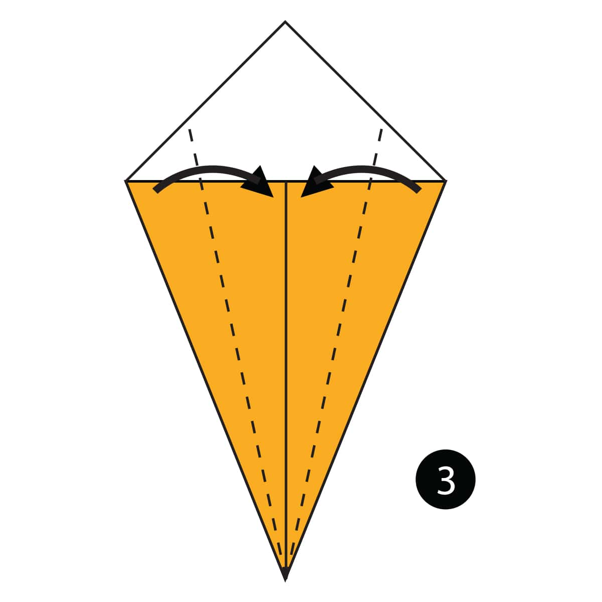
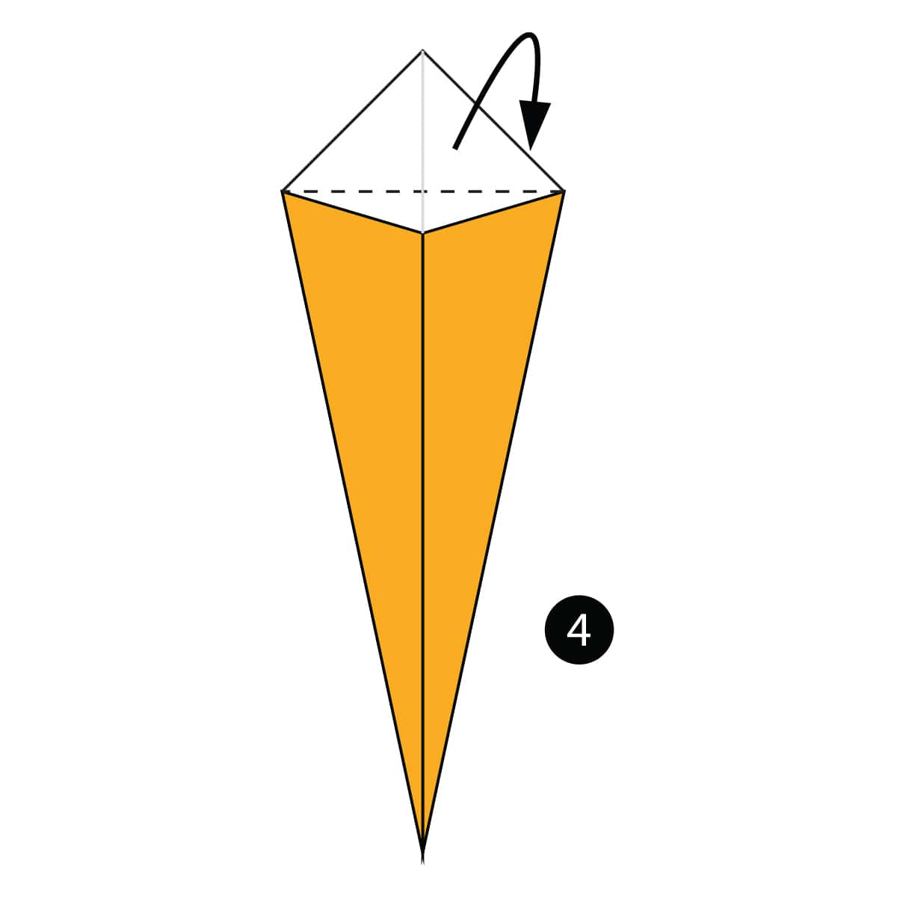
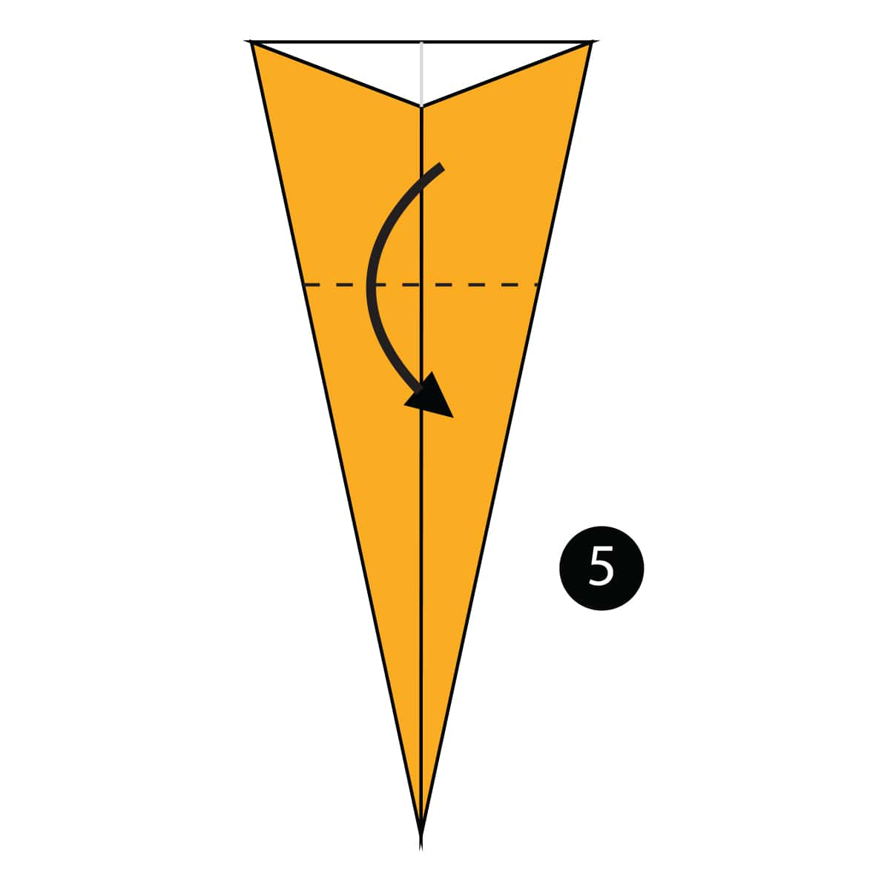
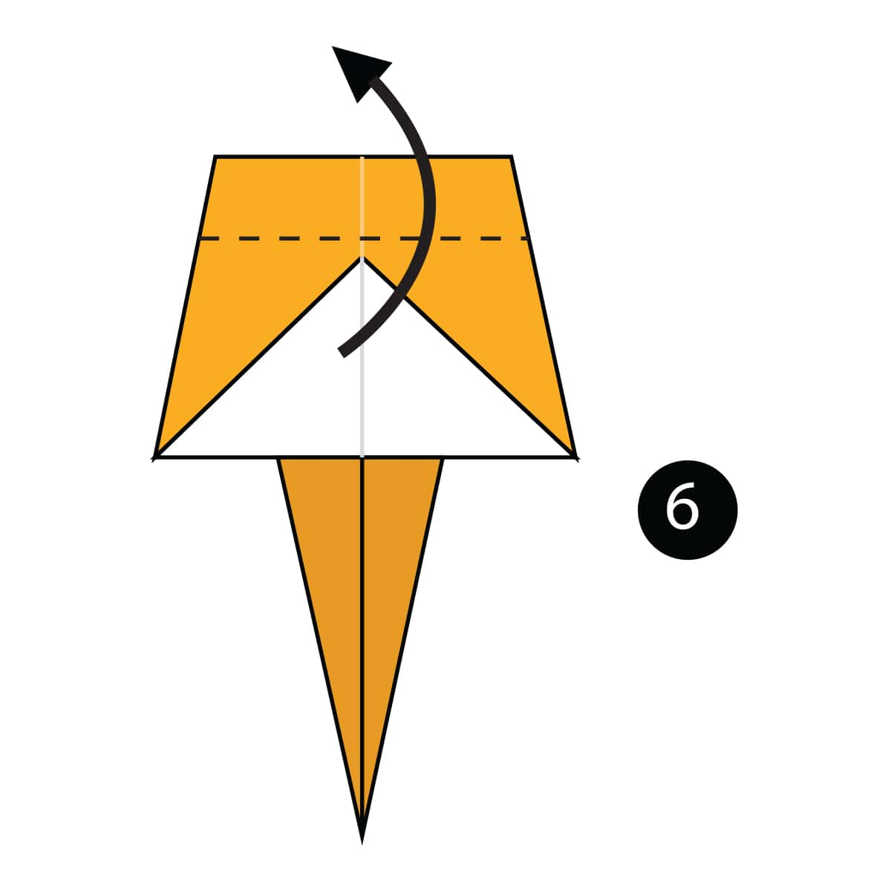
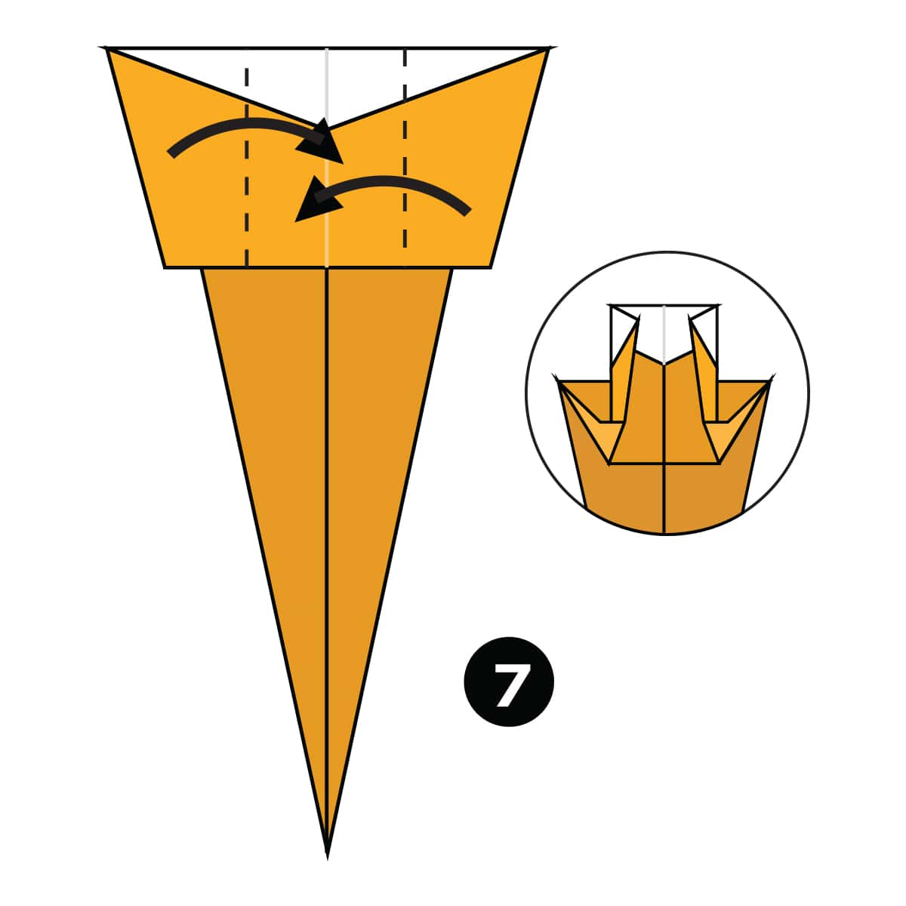
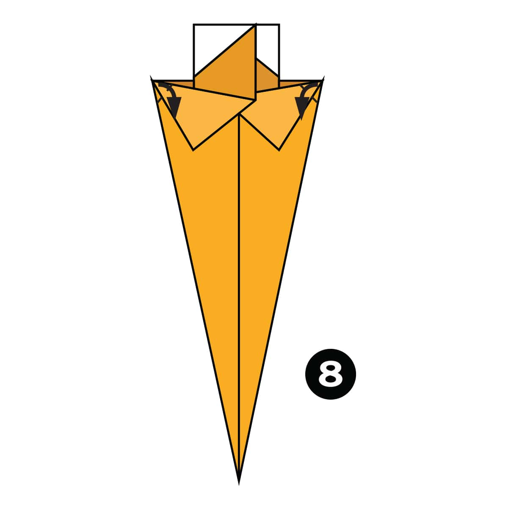
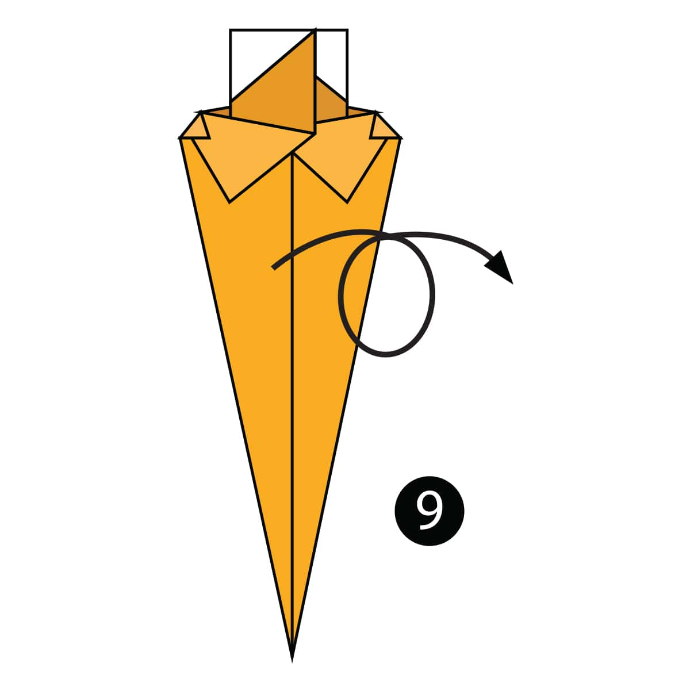
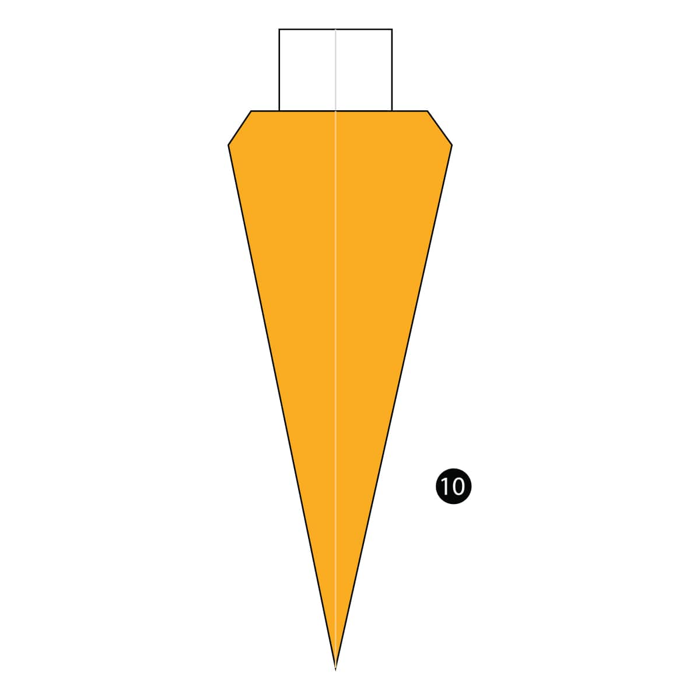

Step 1
Fold the paper in half and then unfold it.

Step 2
Fold both sides of the paper to the centre line.

Step 3
Fold both sides in to the centre line again.

Step 4
Fold the top part of the paper down and behind the model.

Step 5
Fold the paper down along the dotted line.

Step 6
Fold the paper up along the dotted line.

Step 7
Fold both sides in along the dotted lines and Squash Fold the paper underneath.

Step 8
Fold both corners down along the dotted lines.

Step 9
Turn the paper over.

Completed
The completed carrot